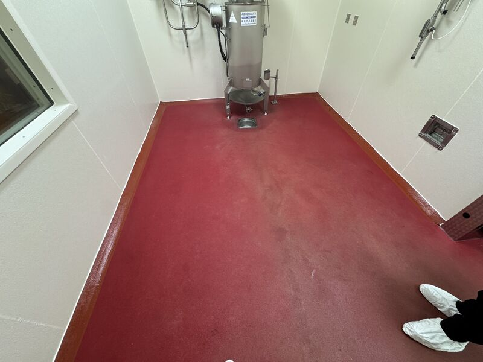
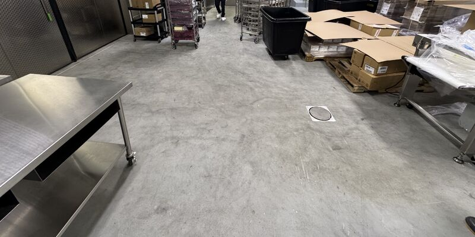
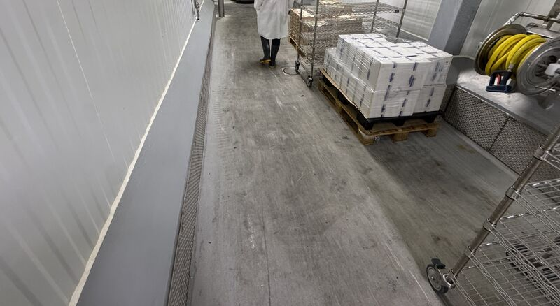
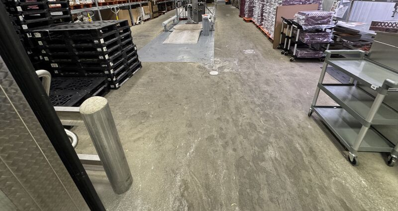

We walked a floor installed back in 2014 at a cheese processor. Between lactic acid, caustic washdowns, and thermal shock, these rooms take a beating.

Some areas have discolored over the years, so we will be back to refresh color and texture. But the important part was boring: not one delamination or performance issue.
Boring Is the Goal
Nobody calls about a floor that is doing its job. In a cheese plant, that means handling lactic acid, moisture, washdowns, temperature swings, and production traffic without quietly separating from the slab.



Refresh the Surface, Keep the Performance
When the underlying system is sound, a refresh can be planned around plant needs. That is a very different conversation than emergency tear-out caused by delamination.